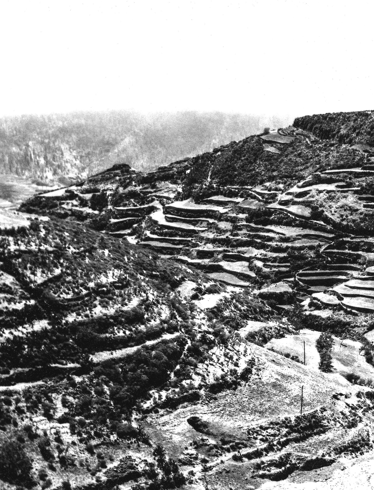

Characterizing the Terraced Landscapes of the Island of Gran Canaria (Canary Islands, Spain)
The Journal of Terraced Landscapes volume 1, issue 1, pp. 134–161 (2020) · Cite this article
- 280 views
- 296 downloads
- DOI10.5281/zenodo.5819587

Abstract
Terraced cultural landscapes provide valuable information on the historical interaction between societies and the environment that can help to ensure their survival. The irruption of tourism and, more recently, globalization, have caused a process of deterritorialization (loss of relationship with the history and memory of places) and an undervaluation of spaces that are characterized by their heritage value and their socio-ecological multifunctionality. This is the case of the terraces of Gran Canaria (Canary Islands, Spain), which suffer the threat of abandonment. The aim of this study is to carry out the first mapping of terraces on the island in order to analyse the environmental and social factors that influence their spatial distribution. To carry out this analysis, the database of a study titled “The Cartography of the Potential of the Natural Environment of Gran Canaria” (Sánchez et al.,1995) was used to obtain the layer of landscape units with terraces. To check its reliability, a cross-validation was carried out, comparing the result obtained from this source (scale 1:18,000, from orthophoto1987) with that derived from the photointerpretation of flight imagery taken between 1951 and 1957 at 1:1,000 scale. For this, a hydrographic basin was used as a pilot area, obtaining a significant level of coincidence of 87.4%. The main results show that terraces cover around 38.8% of the island’s surface and that 55% of them are covered with scrub as consequence of the vegetation recolonization that followed the abandonment of agricultural with the arrival of tourism.
Keywords
- terrace mapping
- agricultural cultural landscapes
- cultural heritage
- Atlantic islands
- Canary Islands
Terraced slopes are ancestral agricultural landscapes (Sandor, 2006; Grau & Pérez, 2008; Wei et al., 2016), built through the collective effort of local populations and adapted to the local natural environment. They are cultural landscapes that result from the interaction of society and the natural environment over time. UNESCO recognizes them as cultural elements in the form of intangible heritage and as cultural landscapes (UNESCO, 2018; 2019). The FAO recognizes the value of the agricultural practices that are developed in them for generating a local economy, maintaining biodiversity and being resilient agrosystems in the face of abrupt changes (FAO, 2021). However, the terraced landscapes recognized and protected to date are only a symbolic example of the wide expanse of terraced landscapes that exist in mountainous regions of the world, in very different climatic conditions and with dimensions that are often still unknown. They are also “everyday landscapes” which the European Landscape Convention consider to be potential resources that favour economic activity and sustainable development (Consejo de Europa, 2000).
Terraced slopes are multifunctional agroecosystems (Lasanta et al., 2011; 2013; Romero Martín et al, 2014; Varotto, 2015; Noriyuki, 2015; Romero Martín et al., 2016; Marco Molina et al., 2018; Romero Martín, 2020) that provide numerous ecosystem services (Wei et al., 2016; Brunori et al., 2018; Romero-Díaz et al., 2019). For this reason, they should also be taken into account, as already proposed by numerous institutions, organizations and researchers, as highly effective agrosystems in the face of the need for adaptation to climate change (Bocco & Napoletano, 2017; Mylona et al, 2020).
Despite the above, terraced landscapes have been largely ignored by regional and local institutions, as can be seen by their scant presence in territorial and sectoral legislation and regulations (Ažman Momirski & Berčič, 2016; Romero Martín et al, 2016), or in an institutional cartographic production in which this extensive cultural heritage and agricultural resource is cartographically invisible (Varotto & Ferrarese, 2008). Some authors point out that the lack of thematic mapping of terraces is due to: i) the terracing of slopes not being a planned process; ii) the scarce interest that the existence of this type of agricultural structure arouses, associated as it is with small private properties and poor areas; iii) the lack of the microgeographic knowledge necessary to locate, in high resolution images and with the use of sophisticated technologies, those terraced spaces subjected to prolonged abandonment and densely covered by vegetation.
Given its territorial condition, any analysis of or intervention in these landscapes, regardless of the approach (heritage, environmental or socioeconomic), must begin with the identification and characterization of the area occupied by terraces. This is a complex task because these infrastructures are developed in geomorphological and historically contrasted landscapes that also, in most cases, suffer significant abandonment (Brancucci & Paliaga, 2008; Pappalardo et al., 2016). Nonetheless, in recent decades, terrace identification and mapping techniques have been implemented. The spectrum of work ranges from in-field GPS-based identification (of surfaces and walls), with analogue cartographic support and the subsequent digitization and implementation of GIS (Petanidou et al., 2008), through cartography- and GIS-based identification at regional scale (Agnoletti et al., 2015), to works that pursue automatic LiDAR-based identification and the creation of digital terrain and digital surface maps (Sofia et al., 2014), or that compare the results obtained by various methods (Berčič, 2016; Pappalardo et al., 2016; Cosner, 2017). The maximum level of spatial precision for the identification of terraces (Díaz-Varela et al., 2014) is achieved with remote sensing systems installed in unmanned aerial vehicles (UAVs). However, these methods are expensive and the necessary technology is not always available.
In this context, the aim of this work is to carry out a mapping of terraces on the island of Gran Canaria (Canary Islands, Spain) in order to analyse the environmental and social factors that influence their spatial distribution. In addition, it is intended to provide the first characterization and zoning of the terraces of the island.
2. Study Area
The island of Gran Canaria occupies a central position in the Canary Island group and is the third largest in size (1,560 km2) and altitude (1,949 m above sea level (a.s.l.) at Pico de las Nieves) (Fig.1). It is a volcanic island, 14.5 Ma old, located in the oceanic lithospheric plate of Africa (Yepes & Peces, 2012; Mangas, 2020). The geological evolution of Gran Canaria follows the patterns typical of a hot-spot volcanic island (Walker, 1990).
Two geomorphological units can be differentiated: the Neocanaria, in the north and east sector, and the Paleocanaria, in the south and west. In the first, the most recent materials predominate (between 7.2 Ma and the prehistoric age) and there is notable alternation between flat watersheds and ravines, while in the second the oldest materials emerge (from 14.5 to 7.2 Ma) and the relief is very steep.
Gran Canaria currently has the appearance of a domed building, with an almost circular plan of about 45 km in diameter and a radial network of ravines spreading out from its central part. On its coastline, steep vertical cliffs on the western coast contrast with soft platforms and wide beaches in the eastern and southern coastal sectors. 63.4% of its surface is located between 200 and 1,000 m.a.s.l. and 33% have slopes above 12° (Santana- Santana & Villalba Moreno, 2008).
Due to its subtropical location, it is under the thermoregulatory influence of the cold oceanic Canary Current and the trade winds and the stratocumulus mantle of the Azores anticyclone. There are two sectors with different climatic characteristics: a windward sector known as the Alisiocanaria that is cool and humid and a leeward sector that is warm and dry known as the Xerocanaria (Santana-Santana & Pérez-Chacón Espino, 1991, Sánchez et al., 1995). The average annual temperature ranges from 20.9°C on the north coast to 23.5°C in the south and 13.7°C at the summit. Average annual rainfall ranges from 80 mm in the south of the island to more than 800 mm per year in the northern mid-elevation area (between approximately 600 and 1,500 m.a.s.l.) known locally as the meidanías.
In the history of the construction of the agricultural landscapes of Gran Canaria, there are three different stages of unequal duration and economic and territorial imprint (Santana- Santana & Pérez-Chacón Espino, 1991; Santana-Santana, 2001; Romero Martín, 2015): i) pre-Hispanic times (300 BCE-15th century), with cereal-based agriculture and very limited terracing developed by the aboriginal population; ii) from the 15th century to the 1960s), with extensive terraced agriculture for the production for self-consumption and exportation of a wide range of products (sugar cane, vine, potatoes, corn, bananas, tomatoes, etc.); and iii) from the 1960s to the present day, notable for the marginalization, under-utilization and, in the worst case, destruction of the terraced slopes as a result primarily of the introduction and development of a new urban-tourist economic model. Currently, the island has a population of 851,231 (INE, 2019) and over 4 million tourist visitors annually (Frontur, 2019), while just 18.6% of the island’s surface is cultivated.
3. Methodology
3.1. Identification and cartography of the surface area of terraced slopes
To identify and map the terraced agricultural surface on the island of Gran Canaria, the GIS database created to map the potential of the natural environment of Gran Canaria was used as the main source of information (Sánchez et al., 1995). The information is structured in landscape units (Boluda et al., 1984; Zonneveld, 1989 and Pérez-Chacón, 2002), where different taxonomic ranges (environments, systems and units) are considered, with the most detailed (unit) being the one used as a reference to elaborate the database. These are areas that present a similar eco-anthropic functioning, at a given scale, and were delimited by field work and photointerpretation of aerial imagery taken by Geocart S.A. (Madrid, Spain) in 1987 at 1:18,000 scale. From the georeferenced database, the information corresponding to the surface of terraces for each unit was used, expressed in four categories divided by quartiles (0≤ x <20%, 20 ≤ x < 40%, 40≤ x <-60%, and x ≥60%). In this work, which is preliminary, only units in which the terraced area was greater than 20% were considered because an area of less than 20% occupied by terraces in the entire unit can show quite imprecise data, for this reason 121 units were discarded. Of the 2009 landscape units identified in Gran Canaria, some 746 were detected with the presence of terraces and an area greater than 20%. The spatial distribution of the terraced units is closely linked to the dominant landform on this island, the hydrographic basin. With this information, a layer was elaborated (terraced surfaces in the landscape units) from which all built-up surfaces were subsequently eliminated. This was performed using the Erase feature of ArcGis, operating on the national topographic database dated 2018 (1:25,000) available at the download centre of the Spanish National Geographic Institute (IGN).
In order to corroborate the reliability of Sánchez et al. (1995) regarding the distribution of terraced landscapes at island level, a cross-validation was carried out with overlaying tools to compare the layer of terraces extracted from Sánchez et al. (1995) and the one carried out for the Agaete ravine basin, by photointerpretation of the aerial imagery taken between 1951 and 1957 by the Spanish Government’s Cartographic and Photographic Centre (CECAF) at a scale of 1:10,000 (ortho-rectified at 40 cm/pixel), obtained from IDE Canarias S.A. (Figure 1, red). It should be noted that the scales of the aerial photographs used are different, as well as the dates of the flights used. The oldest date of 1951 coincides with a period in which agricultural activity was the basis of the island’s economic system, while 1987 represents a chronological cut in which agricultural abandonment is widespread and prolonged (more than 20 years of cessation of agricultural activity). Therefore, it should be considered that the intense recolonization that occurs after agricultural abandonment may have in some cases made it difficult to identify the terraces from the aerial imagery of 1987.
3.2. Spatial distribution and characterisation of the terraces
The analysis of the spatial distribution of the crops on terraces and their characterization was carried out using tools integrated in geographic information systems (GIS) and statistical summaries, relating the units of terraces with the environmental variables of altitude, slope, geology, watersheds and vegetation. In addition, the terraces were also related to the different types of crop and to the protected natural areas of the island, included in the Canary Islands Network of Protected Natural Spaces, providing fundamental information on the degree of exploitation and the categories of conservation. The variables of altitude, slope and hydrographic basins were calculated from a digital elevation model (DEM) with a spatial resolution of 5 m (Table 1) using ArcGIS software. The altitude, from the DEM, was reclassified (reclassify tool) into the following intervals: 0 ≤ x < 200, 200 ≤ x < 400, 400 ≤ x < 600, 600 ≤ x < 800, 800 ≤ x < 1000, 1000 ≤ x < 1200 and ≥1200 m. The slope was also calculated from the DEM with algorithms integrated in the GIS (slope tool) and reclassified (reclassify) with the following intervals: 0° ≤ x < 15º, 15° ≤ x < 30º, 30° ≤ x < 50º, 50° ≤ x < 90º, and ≥90º. Finally, using specific hydrology algorithms implemented in the GIS, the hydrographic basins were obtained through hydrology tools (Spatial analyst). The rest of the variables were obtained directly from the spatial information sources that are detailed in Table 1.
Finally, and starting from the consideration that the cultural landscapes on terraces constitute territorial units in which, in addition to these agricultural infrastructures, all the heritage elements or assets necessary for the survival of the community are integrated, a list of the ethnographic assets was downloaded from the website of the Foundation for Ethnography and the Development of Canarian Crafts. From this information, an initial classification of nine categories was made according to activity or use, and the number of ethnographic assets according to type was calculated for each of the hydrographic basins of Gran Canaria. The established typology includes the following categories: agricultural, religious, commercial, livestock, hydraulic, industrial, road, recreational/artistic, and residential.
4. Results and Discussion
4.1. Terraced area. Precision of the cartography employed
According to the cartography made using the database of Sánchez et al. (1995), the maximum surface of terrace units on the island of Gran Canaria is 605.99 km2, corresponding to 38.8% of the island’s surface area (Figure 1, Table 2). The 121 units with a terrace area of less than 20% are reserved for future work in which more precise cartographic analysis will be carried out. The characterization of the terraces was carried out on the surface of environmental units with a terraced surface greater than 20%, that is, on the 51,146.4 ha, that is, 32.8% of the island surface.
The terraced area in the Agaete basin obtained using the database of Sánchez et al. (1995) is 16.92 km2 (Fig. 2, A), and the one calculated by the authors of this work is 14.79 km2 (Fig. 2, B). Assuming a matching surface between the two cartographies of 9.88 km2, a coincidence level of 87.41% is obtained (Fig. 2, C). Consequently, it is considered that Sánchez at al. (1995) is a validated source for the whole of the island. The precision of the information related to the characterization of the terraced units can therefore be considered significant or acceptable for an initial work of a regional nature, in which the aim is to carry out a preliminary characterization of the terraced surface on an Atlantic island like Gran Canaria.
In Italy, the strong insular component of the terraced area in that country was revealed through the MAPTER Project (Ferrarese et al, 2019). This was particularly notable in the Tyrrhenian Sea in two of the seven islands of the Aeolian archipelago: in Lípari, with 83.94% of its area terraced, followed by Salina with 75.53%. In addition, in the middle of the Mediterranean south of Sicily, the Italian island of Pantellería has more than half of its surface (66.27%) terraced. A slightly lower value was found for the Greek island of Nisyros (Petanidou et al., 2008), in the eastern Mediterranean, with 58.4% of its surface terraced.
In the Atlantic-Macaronesian islands, there are significant differences between the more mountainous and humid islands and the flatter and arid ones. Terraced landscapes in Madeira account for approximately 48.87% of the island’s surface area (Ferreira, 2021), while in La Gomera (Canary islands) the corresponding value is 22.4% (Romero et al, 2019). In both cases, these are provisional data which could be significantly higher, given that the recolonization of the laurel forest that the terraces have undergone on both islands in recent decades (north of Madeira and on the edge of Garajonay National Park in La Gomera) has complicated their identification by photointerpretation. In the two easternmost Canary Islands (Fuerteventura and Lanzarote), due to their condition of low and flat islands, the terraces barely occupy 5.6% and 3.28% of the respective island surfaces, and are concentrated in the valleys of the ancient massifs facing the ocean (González Morales & Ramón Ojeda, 2019).
4.2 Characterization of the Terraces in Gran Canaria
4.2.1 Environmental factors 4.2.1.1 Altitude
The terraces are distributed from 25 m.a.s.l. to above 1,200 m.a.s.l. A clear altitudinal gradient of the terraces can be seen, in which almost half of their surface (45.45%) is located at levels below 400 m (Fig. 3 and Fig. 1). In this coastal geo-environment, terraces were built on the paleo-cliffs of the north coast, on the slopes and lava ramps of the northeast, and on the ridges and lower sections of the numerous ravines on the island. Above 400 m, the terraced surface decreases to 28.65% (400 ≤ x< 800 m.a.s.l.), then to 20.19% (800-1,200 m.a.s.l.) and finally to a minor presence of just 5.7% between 1,200 m.a.s.l and the summit. This linear distribution with a polynomial tendency of the terraces is explained by the fact that the topographic profile of this island is much less inclined than that of other islands in the Canary Islands. The average slope is 10% in the north and 15% in the south, compared to 20-30% on the islands of La Palma and Tenerife (Salas, 2020). This fact influences the greater climatic continentality of the summit and the existence of a large area in the mid-elevation range where the most fertile and productive soils of Gran Canaria develop.
In other areas, such as the island of La Gomera, terraces barely occupy 13.6% of the coast (<200 m.a.s.l.) as its coastline is made up of very active cliffs, especially those on the north slope (Romero-Martín et al., 2019). The predominance of the location of terraces at low elevations is a characteristic shared with other European terraced areas, including Italy (Ferrarese et al., 2019) and Slovakia (Slámová et al., 2017) and is attributable to environmental (temperate climates) and socioeconomic (proximity to the sea or rivers beds) factors.
4.2.1.2 Slope
Half of the terraced area of Gran Canaria (50.11%) has been built on steep slopes greater than 30° (Fig. 4), a clinometric threshold above which all agricultural practice is discouraged, including that involving terracing. This characteristic differentiates it from other islands of the same archipelago, for example from La Gomera where 40% of its terraced surface extends over territories with mild to moderate slopes (5-15°), located in the south in ridged watersheds. These are type A terraces (AIDER La Gomera, 2013), similar to the chains of Gran Canaria, and characterized by wide landings with gentle slopes and walls less than 0.5 m high, where cereals were grown and, in some cases throughout the 20th century, export crops (banana and tomato). In Gran Canaria, most of the terraced surface is located on the slopes of embedded ravines, which explains its frequency in very unstable slopes and with a severe danger of mass movements. A certain similarity can be established between the terraced slopes of Gran Canaria and those of the Ribiera Sacra (Galicia, Spain), where 58.13% of the terraces were built on steep slopes (between 16°-32°) and 20.33% on extreme slopes (between 32° and 64°), with this being one of the characteristics that makes Galician vineyard landscapes unique and illustrate the human effort made in their construction, cultivation and conservation (Pérez-Alberti, 2019).
4.2.1.3 Lithology
The terraces of Gran Canaria are located mainly on magmatic lithologies (73.5%) and, among them, basaltic and basanite lavas are the most abundant (53.32%) (Table 4). This is the most commonly used type of rock in the construction of the dry stone walls of the Canarian terraces, especially in Gran Canaria and La Gomera. Although with less presence, terraces were also built in sedimentary deposits on slopes. 11.68% of those in Gran Canaria and 8% of those in La Gomera are found on colluvial deposits (slopes and cones of debris and coastal collapses), the latter most notable on the coasts of La Gomera, whose cliffs are important heritage assets. The terraces located in the landslide deposits inside the Tirajana caldera, in the southeast of Gran Canaria, are also noteworthy examples (Fig. 5).
4.2.1.4 Landforms. Hydrographical basins
On average, at island level, in relation to the area of the hydrographic basin, 33% of the area is terraced. However, this datum hides the strong asymmetry that exists between the two island supra-environments (Fig. 6).
In the Alisiocanaria sector (northeastern slope), from the Agaete ravine basin to the San Bartolomé de Tirajana basin, more than double the basin area is covered by terraces, on average, than in the Xerocanaria sector (southwestern slope), with 48.42% vs. 19.99%, respectively.
The basin with the greatest presence of terraces in all of Gran Canaria (94.14%), and which contributes the most terraced surface area to the island complex (5.8%), is the Guayadeque-Tirajana inter-basin, located in the southeast of the island. In the leeward sector, the most terraced surface area is found in the Tirajana basin, with 73% of its surface terraced. It should be noted that it is in the extensive windward sector that the greatest diversity of cultural landscapes is also concentrated in the island’s terraces, as the interfluves are topographic borders that mark very strong environmental differences between contiguous basins. Changes in the orientation of the basin, its setting, shape and the altitude gradient itself generate a tremendous diversity of microclimatic environments that have a considerable impact on terraced slope agricultural landscapes (Fig. 7 a, b, c, d).
In comparison again with the island of La Gomera, the opposite situation is found. The maximum surface extension of terraces is in the leeward sector (30.1% compared to 15.1% in the windward sector), which may be due to the greater extension of ramp interfluves, on which chain-type terraces are built, located in the south of the island, compared to those with a similar location in Gran Canaria.
4.2.2 Human factors 4.2.2.1 Land occupation by terraced surface
More than half of the terraced area of Gran Canaria (55.03%) has been recolonized by shrub vegetation (Figure 8 and Table 5) as a consequence of the plant recolonization process that followed the agricultural abandonment that began in the 1960s in many terraced regions of the Mediterranean (García-Ruiz & Lana-Renault., 2011) and also of the mid-Atlantic, as in the Canary Islands. In addition, the greater extension of coastal and peak scrub on the terraces of the island as a whole allowed verification of what was initially observed in the Guiniguada basin (NE), namely that the geo-environments in which agricultural activity is first abandoned are those of the coast and summit (Romero, 2015 and Romero et al, 2015 and 2017). The terraces that still maintain evidence of their agricultural use account for 37.25% of the island’s terraced area, with 20.16% dedicated to the cultivation of herbaceous crops. Importantly, agricultural abandonment has occurred recently in a significant percentage of terraces (11.13%).
Finally, the process of artificialization, or the destruction of terraces due to the construction of facilities (sports, industrial, recreational and educational), housing developments and roads, has affected 3.8% (1,941 ha) of the terraced area of Gran Canaria. This datum is in notable contrast with the corresponding 158 ha (2%) on the island of La Gomera in 2016 (Romero et al., 2019). In addition, it should also be noted that in the case of La Gomera terrace reforestation is much higher, 12% compared to 2.21% from Gran Canaria. In addition, the tree species used in the reforestation differ, with the Canary pine the most used in Gran Canaria and laurel, faya-heath and thermophilic trees the dominant ones on the island of La Gomera.
4.2.2.2 The role of terraces in environmental protection
In the southwest of the island of Gran Canaria, two areas overlap, the Risco Caído Cultural Landscape and the Sacred Mountains of Gran Canaria (declared a World Biosphere Reserve by UNESCO in 2005 and a World Heritage Site in 2019). The terraced areas account for 24% and 8.1% of the area respectively.
On the other hand, terraced landscapes are present in 23 of the 33 protected natural areas of Gran Canaria and 34.3% of the terraced area is in a protected natural area. Figure 9 shows the percentages of protected terraced surface and the type of protection, ordered from left to right in accordance with least to most restrictive protection. The results show a direct relationship between the least restrictive protection figures and the presence of terraces. These are rural parks (39.27%) and protected landscapes (31.51%), which seek the conservation of humanized landscapes. Among their objectives, the conservation of agricultural uses is considered in an integrated way.
On the other hand, the lower percentages correspond to more restrictive protection figures, whose objectives do not include the integration of all the elements that make up the environment such as human activities. These include Nature Parks (3.15%) and Sites of Scientific Interest (0.27%). Only in one of the 23 spaces, in the Parque Rural del Nublo, are conservation, restoration and new terraces considered among its declaration foundations, while the protection of terraces is not included among the basic or priority objectives in any of the spaces (Romero et al, 2016). In La Gomera, on the other hand, the terraced surface that exists in natural spaces protected by the Canarian government accounts for barely 8.7% of the total. The most notable of these natural spaces is the Valle Gran Rey Rural Park with its imposing landscape of terraces. As in other places in Europe, there is an overlap between high-valued sites, such as historical rural landscapes, including terraces, and areas protected for their natural values. At national and European level, these include, for example, the Natura 2000 network, and at global scale Biosphere Reserves and World Heritage Sites (Agnoletti et al., 2015). The same author points out, as also indicated in this study, that environmental policies often protect and promote the renaturing process that terraced and abandoned spaces have experienced since the 1960s and, importantly, prohibit the restoration of agricultural land.
4.3 Heritage associated to terraced surfaces
As can be seen in Figure 10, of the 8,563 elements of the ethnographic heritage that were found in the terraced areas of Gran Canaria, the most numerous are those linked to hydraulic use (3,737) with a maximum of 770 elements in Azuaje-Tenoya. There is a strong degree of typological diversity in this respect, ranging from water-extraction infrastructures (wells, mines and galleries) to storage (ponds, and tanks) and distribution (canals and ditches). The second most numerous are related to livestock activity (1,674 elements), including shepherd/goatherd shelters, corrals, etc. There is also an extensive agricultural heritage (1,546 elements), among which those related to the storage of farming produce and tools are the most noteworthy (fruit and cheese driers, cellars, wineries, tool rooms). No less important, due to the close relationship with this type of landscape, are those linked to habitat (traditional houses, cave houses), religious acts (churches, shrines, cemeteries) and agro-industrial and commercial activities (mills, wineries, oil mills). The analysis by basins reveals the important tangible and immovable heritage legacy that exists in the terraced spaces, as well as revealing the island basins with the most intense agricultural activity and population presence, and, therefore, with the greatest amount of ethnographic heritage. In this respect, the basins in the northern sector of the island are of particular interest as their ethnographic heritage content is considerably higher than that of the southern leeward sector (6,483 vs. 2,080, respectively). The Azuaje-Tenoya inter-basin contains the greatest wealth of heritage on the island (municipalities of Firgas and Arucas), particularly regarding hydraulic aspects associated to the traditional crops grown in the mid-elevation range (orchards, fruit trees and potatoes) and at coastal level (mainly bananas). It is followed in importance by the basins of the Telde, Guiniguada and Agaete ravines, which have a long agro-livestock tradition and settlements dating back to pre-Hispanic times.
5. Conclusions
In this work, a first approach is made to the detailed mapping of terraces of an overpopulated and Atlantic island with a high level of tourism activity, in which agriculture contributes little to its current economy but does provide diverse cultural landscapes of great heritage value. Use of the database of Sánchez et al. (1995) gave good results in terms of spatial resolution and contributed to achieving the aim of this research. Even so, with a view to future works that require greater precision and to correct any possible errors due to a lack of visibility because of canopy cover, the combined use of the photointerpretation of historical flights and LIDAR remote sensing is planned, along with the resulting DEMs. In this way it will be possible, in addition to covering the maximum terraced surface area in Gran Canaria, to map the walls, which are clearly visible on the dates of the flights.
It is verified that Gran Canaria is an island with a considerable terraced area (605.99 km2) that corresponds to 38.8% of the total island surface area. These terraces have been built on steep slopes, in which plant recolonization and artificialization threaten to destroy a cultural landscape that, in addition to offering numerous ecosystem services, forms part of the heritage of its inhabitants. This preliminary analysis on the terraces of the island of Gran Canaria can be considered an initial, but important, step to recover the territorial memory of cultural landscapes that are often ignored or abandoned, but which provide highly attractive landscapes and provide opportunities to face the challenges of the future.
References
- AIDER La Gomera (2013) Agropaisajes Insulares. Proyecto de custodia del territorio en islas turísticas y rurales. http://www.aidergomera.es/areas-de-actuacion/sector-primario/cooperacion-agropaisajes-insulares-201013/cooperacion-agro-paisajes-insulares/
- Agnoletti, M.; Conti, L.; Frezza, L.; Santoro, A. (2015) Territorial Analysis of the Agricultural Terraced Landscapes of Tuscany (Italy): Preliminary Results, Sustainability 7, pp. 4564–4581.
- Ažman Momirski, L.; Berčič, T. (2016) Ignored regions: Slovenian terraced landscapes, Annales Ser. hist. Sociol. 26/3, pp. 399–418.
- Berčič, T. (2016) Discovering terraced areas in Slovenia reliable detection with LIDAR, Annales Ser. hist. Sociol. 26/3; pp. 449–468.
- Bocco, G.; Napoletano, B.M. (2017) The prospects of terrace agriculture as an adaptation to climate change in Latin America, Geography Compass 11/10, pp. e12330.
- Boluda Hernández, R.; Molina Donate, M.J.; Sánchez Díaz, J. (1984) Definición y metodología de Unidad de Paisaje. Importancia de la geología ambiental en su descripción, in I Congreso Español de Geología. Madrid: Instituto Geografico Nacional.
- Brancucci, G.; Paliaga, G. (2008) The problems with mapping: the case of Liguria, in: Terraced landscapes of the Alps, Atlas, ALPTER Project. Venezia: Marsilio.
- Brunori, E.; Salvati, L.; Antogiovanni, A.; Biasi, R. (2018) Worrying about ‘Vertical Landscapes’: Terraced Olive Groves and Ecosystem Services in Marginal Land in Central Italy, Sustainability 10, pp. 1164.
- Cosner, A. (2017) Metodologia per l’individuazione e la classificazione dei paesaggi terrazzati in Trentino. Rapporto Sullo Stato del Paesaggio 05. https://www.paesaggiotrentino.it/documenti/Documentazione/Rapporto%20 sullo%20stato%20del%20paesaggio/R05_Metodologia%20individuazione%20paesaggi%20 terrazzati%20in%20Trentino.pdf
- Díaz-Varela, R.A.; Zarco-Tejada, P.J.; Angileri, V.; Loudjani, P. et al. (2014) Automatic identification of agricultural terraces through objectoriented analysis of very high resolution DSMs and multispectral imagery obtained from an unmanned aerial vehicle, Journal of Environmental Management 134, pp. 117–126.
- Consejo de Europa (2000). Convenio Europeo del Paisaje. https://www.mapa.gob.es/es/desarrollo-rural/planes-yestrategias/desarrollo-territorial/090471228005d489_tcm30-421583.pdf
- Frontur (2019) Estadística de movimientos turísticos en frontera. https://www.ine.es/dyngs/INEbase/es/operacion. htm?c=Estadistica_C&cid=1254736176996&menu=ultiDatos&idp=1254735576863
- FAO (2021). Sistemas Importantes del Patrimonio Agrícola Mundial. http://www.fao.org/giahs/giahsaroundtheworld/es/
- Ferrarese, F.; Pappalardo, S.E.; Cosner, A.; Brugnaro, S.; Alum, K.; Dal Pozzo, A.; De Marchi, M. (2019) Mapping Agricultural Terraces in Italy. Methodologies Applied in the MAPTER Project, in World Terraced Landscapes: History, Environment, Quality of Life, Environmental History. Cham: Springer. Ferreira, L. (2021) Infraestructura y Territorio: el “Poio” (el Bancal). Desafíos del paisaje cultural de la isla de Madeira. Tesis doctoral en elaboración. Universidad de Évora (Portugal). García-Ruiz, J.M; Lana-Renault, N. (2011) Hydrological and erosive consequences of farmland abandonment in Europe, with special reference to the Mediterranean region – A review, Agriculture, Ecosystems & Environment 140 (3–4), pp. 317–338. González Morales, A.; Ramón Ojeda, A. (2019) Los paisajes de terrazas en las Canarias Orientales (Lanzarote y Fuerteventura): hacia una tipología actual, Revista Española de Estudios Agrosociales y Pesqueros 253, pp. 65–92. Grau Mira, I.; Pérez Rodríguez, V. (2008) Aproximación arqueológica al estudio de los paisajes aterrazados en el área central valenciana, LVCENTVM XXVII, pp. 33–50. INE-Instituto Nacional de Estadística (2019). Censo de Población y Viviendas. https://www.ine.es/Lasanta Martínez, T.; Arnáez Vadillo, J.; Ruiz-Flaño, P.; Ortigosa Izquierdo, L. (2011) Los bancales en la montaña mediterránea. Un paisaje multifuncional en proceso de degradación, in: Territorio, paisaje y patrimonio rural, pp. 198–209. Cáceres: Universidad de Extremadura. Lasanta Martínez, T.; Arnáez Vadillo, J.; Ruiz-Flaño, P.; Lana-Renault Monreal, N. (2013) Los bancales en las montañas españolas: un paisaje abandonado y un recurso potencial, Boletín de la Asociación de Geógrafos Españoles 63, pp. 301–322. Mangas Viñuelas, J. (2020) Génesis y evolución geológica de Gran Canaria: un buen ejemplo de la geodiversidad de una isla volcánica intraplaca oceánica, in Gran Canaria: las huellas del tiempo, pp. 61–113. Actas XV Semana Científica Telesforo Bravo. Puerto de la Cruz: Instituto de Estudios Hispánicos de Canarias. Molina, M.; J.A., Giménez Font, P.; Padilla Blanco, A. (2018) Organización tradicional de una ladera de montaña mediterránea: fuentes geo-históricas y trabajo de campo para el análisis de la dinámica del paisaje vegetal, in Bosque mediterráneo y humedales: paisaje, evolución y conservación: aportaciones desde la biogeografía, Vol. 1, (Tomo 1), pp. 199–207. Mylona, P.; Sakellariou, M.; Giannakopoulos, Ch.; Psiloglou, B.; Kitsara, G. (2020) Terrace landscapes as green infrastructures for a climate-smart agriculture to mitigate climate change impacts, Conference Paper. Noriyuki, J. (2015) Comparación de la política de terrazas entre Perú y Japón, in II Congreso Internacional de Terrazas. Encuentro de culturas y saberes de terrazas del mundo, pp. 354–365. Cusco: CBC-JICA. Pappalardo, E.; Ferrarese, F.; Tarolli, P.; Varotto, M. (2016) Implementing automatic LiDAR and supervised mapping methodologies to quantify agricultural terraced landforms at landscape scale: the case of Veneto Region, Geophysical Research Abstracts 18, EGU2016-14755-1. Petanidou, T.; Kizos, T.; Soulakellis, N. (2008) Socioeconomic Dimensions of Changes in the Agricultural Landscape of the Mediterranean Basin: A Case Study of the Abandonment of Cultivation Terraces on Nisyros Island, Greece, Environmental Management 41, pp. 250–266. Pérez-Alberti, A. (2019) La Ribeira Sacra. Paisajes de Terrazas. Grupo de Desenvolvemento Rural Ribeira Sacra- Courel. Pérez-Chacón Espino, E. (2002) Unidades de paisaje: Aproximación científica y aplicaciones, in Paisaje y ordenación del territorio, pp. 122-135. Sevill: Consejería de Obras Públicas y Transportes de la Junta de Andalucía y Fundación Duques de Soria. Romero-Díaz, A.; De Vente, J.; Díaz-Pereira, E. (2019) Evaluación de los servicios ecosistémicos proporcionados por las terrazas agrícolas, Pirineos 174. Romero Martín, L.E.; González Morales, A.; Máyer Suárez, P.; Ruiz-Flaño, P.; Pérez-Chacón Espino, E.; Hernández Calvento, L. (2014) Propuesta metodológica para la valoración, conservación y recuperación del patrimonio de bancales: un ensayo en la cuenca del Guiniguada (Gran Canaria, Islas Canarias, España), in II Congreso Internacional de Terrazas. Encuentro de culturas y saberes de terrazas del mundo, pp. 302–315. Cusco: CBC- JICA. Romero Martín, L.E. (2015) Consecuencias geomorfológicas del abandono agrícola en la cuenca del Guiniguada (Gran Canaria, Islas Canarias): aplicación a la conservación del patrimonio de bancales [Doctoral thesis]. Las Palmas de Gran Canaria: Universidad de Las Palmas de Gran Canaria. Accessible at: https://accedacris.ulpgc. es/handle/10553/13010 Romero Martín, L.E.; Pérez-Chacón Espino, E.; García Romero, L.; Hernández Cordero, A. (2015) Análisis de la evolución (1960-2002) del paisaje agrícola mediante SIG: aplicación a la cuenca del Guiniguada (Gran Canaria, Islas Canarias, España), in Análisis espacial y representación geográfica: innovación y aplicación, pp. 1203–1209. Romero Martín, L.E.; González Morales, A.; Ramón Ojeda, A. (2016) Towards a new valuation of cultural terraced landscapes: the heritage of terraces in the Canary Islands (Spain), Annales Ser. hist. Sociol. 26/3; pp. 499–512. Romero Martín, L.E.; García Romero, L.; Hernández Cordero, A.; Pérez-Chacón Espino, E. (2017) Cambios de usos y erosión de suelos: análisis diacrónico (1960-2012) mediante SIG en la cuenca del Guiniguada (Gran Canaria, Islas Canarias, España), Territorium 24, pp. 59–76. Romero Martín, L. E.; Hernández Cordero, A. I.; Santana Cordero, A. M.; Vargas Negrín, C.; Palerm Salazar, J. M. (2019) Terraced landscapes in the Canary Islands: La Gomera, “The Terrace Island”, in World Terraced Landscapes: History, Environment, Quality of Life, pp. 97–118. Cham, Switzerland: Springer Nature. Romero Martín, L.E. (2020) Bancales en los paisajes del agua en Canarias, in La cultura del agua en Canarias a través de la historia, pp. 523–548. Gran Canaria: Departamento de Ediciones de la Consejería de Cultura del Cabildo de Gran Canaria. Salas Pascual, M. (2020) Flora y vegetación de Gran Canaria, in Gran Canaria: las huellas del tiempo (Actas XV Semana Científica Telesforo Bravo), pp. 115–165. Puerto de la Cruz: Instituto de Estudios Hispánicos de Canarias. Sandor, J.A. (2006) Ancient agricultural terraces and soils, in Footprints in the Soil, pp. 505–533. Elsevier. Sánchez, J.; Ríos, C.; Pérez-Chacón, E.; Suárez, C. (1995) Cartografía del potencial del medio natural de Gran Canaria. Gran Canaria: Ed. Cabildo Insular de Gran Canaria. Santana Santana, A.; Pérez-Chacón Espino, E. (1991) Sociedad y medio: aproximación a las formas históricas de uso del territorio en Gran Canaria, in VIII Coloquio de Historia Canario-Americana, pp. 485–506. Santana Santana, A. (2001) Evolución del paisaje de Gran Canaria (siglos XV – XIX). Las Palmas de Gran Canaria: Ediciones del Cabildo de Gran Canaria. Santana Santana, A.; Villalba Moreno, E. (2008) Atlas Anroart de Canarias. Anroart Ediciones. Slámová, M.; Krcmárová, J.; Hroncek, P.; Kastierová, M. (2017) Environmental factors influencing the distribution of agricultural terraces: Case study of Horný Tisovník, Slovakia, Moravian Geographical Reports 25 (1), pp. 34–45. Sofia, G.; Marinello, F.; Tarolli, P. (2014) A new landscape metric for the identification of terraced sites: The Slope Local Length of Auto-Correlation (SLLAC), ISPRS Journal of Photogrammetry and Remote Sensing 96, pp. 23–133. UNESCO (2018) Lista del Patrimonio Cultural y Material. https://ich.unesco.org/es/RL/conocimientos-y-tecnicasdel-arte-de-construir-muros-en-piedra-seca-01393 UNESCO (2019) World Heritage List. http://whc.unesco.org/en/list/Varotto, M.; Ferrarese, F. (2008) Mapping and geographical classification of terraced landscapes: problems and proposals, in Terraced landscapes of the Alps - Atlas, pp. 38-45. Venice: Marsilio, www.alpter.net Varotto, M. (2015) Terraced landscapes of the Alps: Decay, rediscovery, revitalization, in II Congreso Internacional de Terrazas. Encuentro de culturas y saberes de terrazas del mundo, pp.38–48. Cusco: CBC – JICA. Walker, G.P.L. (1990) Geology and volcanology of the Hawaiian Islands, Pacific Sc. 44, pp. 315–347. Wei, W.; Chen, D.; Wang, L.; Daryanto, S.; Chen, L.; Yu, Y.; Lu, Y.; Sun, G.; Feng, T. (2016) Global synthesis of the classifications, distributions, benefits and issues of terracing, Earth-Science Reviews 159, pp. 388–403. Yepes, J.; Peces, M. R (2012) Morfogénesis erosiva del relieve en Gran Canaria (Islas Canarias), Geo-Temas 13 (1). Zonneveld, I.S. (1989) The land unit - A fundamental concept in landscape ecology, and its applications, Landscape Ecology 3 (2), pp. 67–86.
Rights and permissions
Open Access. This article is licensed under a Creative Commons CC BY 4.0 license, which permits use, sharing, adaptation, distribution and reproduction in any medium or format, as long as you give appropriate credit to the original author(s) and the source and indicate if changes were made.
About this article
Cite this article
Romero-Martín, L. E., Marrero-Rodríguez, N., García-Romero, L., Santana-Santana, S., Pérez-Chacón Espino, E., & Fernández-Cabrera, E. (2020). Characterizing the Terraced Landscapes of the Island of Gran Canaria (Canary Islands, Spain). The Journal of Terraced Landscapes, 1(1), 134–161. https://doi.org/10.5281/zenodo.5819587
- Published
- October 2020
- Issue
- Volume 1, Number 1
- Journal
- The Journal of Terraced Landscapes, ISSN 2754-7612 (Online)
- Archive
- Zenodo record 5819587
- terrace mapping
- agricultural cultural landscapes
- cultural heritage
- Atlantic islands
- Canary Islands